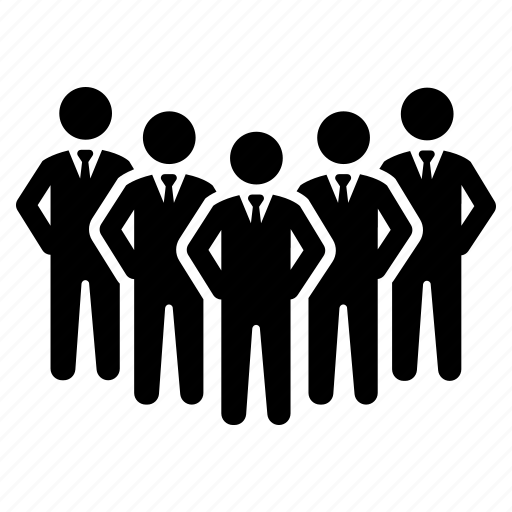

Objective
To secure a challenging and rewarding position as a fresh graduate, where I can leverage my strong academic foundation and dedication to contribute to the success of the organization. Eager to apply my theoretical knowledge and practical skills, I aim to actively engage in professional growth, collaborate with diverse teams, and make a meaningful impact while adapting continuously.
 Education
Education
-
Sree Vidyanikethan Engineering College (Tirupati, Andhra Pradesh), India
BTech (Computer Science and Engineering), 2024
CGPA: 9.56 -
Narayana Junior College (Kadapa, Andhra Pradesh), India
Intermediate (MPC), 2020
CGPA: 10.0 -
Gurukul Vidya Peeth English Medium High School (Kadapa, Andhra Pradesh)
Secondary School, 2018
CGPA: 10.0
 Projects
Projects
-
Handwritten Signature Recognition System
Python, DL (CNN), OpenCV
Used to detect whether the signature is genuine or fraud. Developed using CNN and MobileNet.
-
Brain Tumor Detection Using CNN With ResNet 50 and U-Net Model
Python, DL
Used to detect the presence of tumor and segmenting area of tumor. Developed using Resnet50 and U-net.
-
Food Ordering Website
A responsive food website containing a variety of items and their prices. Developed using HTML, CSS, and JavaScript.
-
Photo Editor
It is a photo editing website used for enhancing the image. Developed using HTML, CSS, and JavaScript.
 Technical Skills
Technical Skills
- Programming Languages: Python
- Databases: SQL
- Data Science: Standard ML and DL Algorithms
- Software: MS Word, MS Excel, MS PowerPoint
- Languages: English, Telugu, Hindi
- Soft Skills: Communication, Leadership, Team Maker and Team Player
- Other Skills: Adobe After Effects, Logo Design
 Certifications
Certifications
- Introduction to Programming on Python - Issued by MTA
- Introduction to Python - Issued by Coding Ninjas
- Responsive Web Design Developer Certification - Issued by FreeCodeCamp.org
- Linux Certification - Issued by Coursera
- Azure Fundamentals - Issued by MTA
- Cloud Computing Foundations - Issued by FutureSkills
- Amazon Academy Cloud Foundations & Architecting - Issued by Amazon Academy
- Artificial Intelligence Foundations - Issued by FutureSkills
 Leadership and Event Management Roles
-
Coordinator of Promotions Team - DSA (Department of Student Affairs) – SVEC
Contributed to promoting college-level events and fests. -
Head Coordinator of NSS (CSE Dept, SVEC)
Actively participated in social service and awareness programs organized by the college. Managed over 70+ students and contributed in making them participate in social service programs. -
Coordinator of CETA, Computer Science Club, SVEC
Contributed to the development of competitive programming department. Conducted many non-technical events and also participated in technical contests.
 Achievements
Achievements
- Completed over 300+ problems on LeetCode
- Participated in "Champions" TV Show Quiz Program by ETV
- Participated in NCKITS'22 (National Conference on Knowledge, Innovations, and Technologies for Sustainability) and shared a presentation on Augmented Reality (META)
- Participated in a one-day student development program on "Start-Up and Product Development," shared thoughts, and presented a demonstration of CNN for Sign and Edge Detection
- Received many prizes and certifications in Non-Technical Contests (e.g., Movie Contents, Sports, Content Creation)